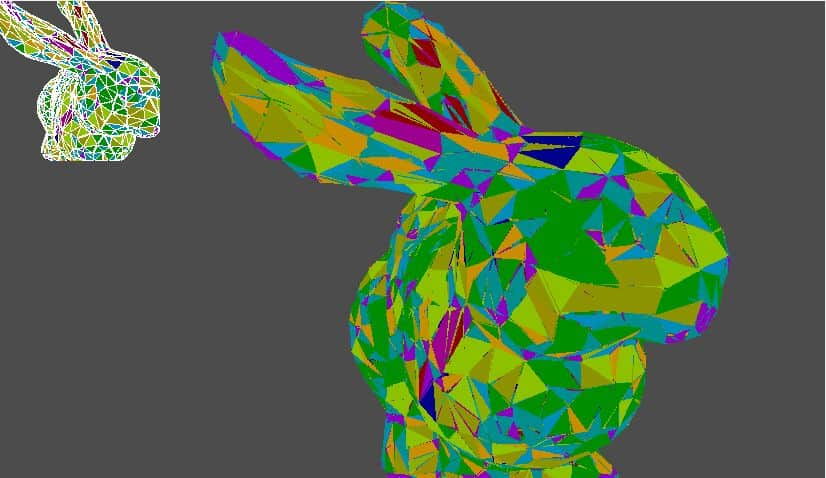
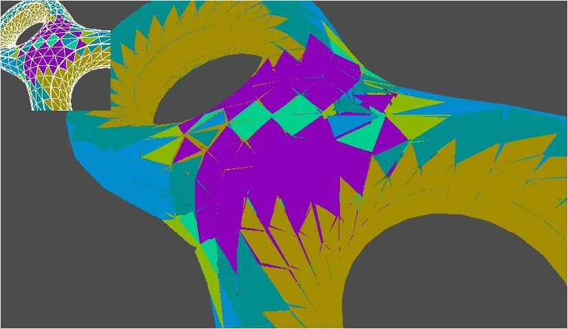
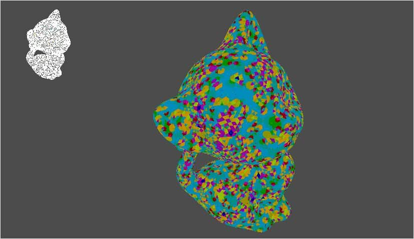

One problem that has been overlooked thus far is that the pieces that make up these shapes require a great deal of customization. For example, when modeling a freeform building from triangles or planar quad panels, it is very likely that each individual polygon is unique when compared to the other polygons. In terms of manufacturing, this uniqueness ignores economies of scale and requires each piece to be custom manufactured. Wishing to automate this reduction process and apply it to arbitrary freeform shapes, I found the solution in this paper.

Researchers propose a technique that takes a triangulated surface as input and outputs a surface with the same topology but altered geometry such that each polygon falls into a set of discrete equivalence classes. Folowing their steps, I achieved the algorithm in my VS Project. Their approach is Easy to understand. I'll explain next or you can just check the reference pdf.

We begin by describing an error function that measures how close the polygons are to satisfying this criteria. To optimize that error function, we first need to cluster triangles into discrete sets such that the assignment of sets minimizes our error. Then, we can find canonical polygons for each set using nonlinear optimization. Next, by solving a Poisson equation, we can find positions of vertices such that the surface polygons match the canonical polygons as close as possible. We also describe how to incorporate a fairness criteria into the optimization to avoid oscillations of the surface. We iterate this entire process until we reach a user specified tolerance, possibly adding clusters during iteration to guarantee convergence. We have been able to successfully reduce the number of unique triangles to lie within a small percentage of the total number of triangles in the surface and demonstrate our technique on various examples.
